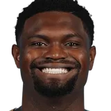

Willy Hernangomez
2016-17 to 2022-23 · Career Map
His best final NBA finish was #16 of 30, with the 2021-22 New Orleans Pelicans. In his 342 games for 3 teams over 7 seasons they went 149–193 (43.6%), −44 games under .500, with an average final finish of 19.9.
Final NBA finish, season by season
Title Finals Other playoffs Missed. #1 = champion; the dashed line is last place that season. Each point opens that season's final standings.
All 30 teams ranked in 2021-22, his best finish (#16)Teammate help
 Kemba Walker3.01 season
Kemba Walker3.01 season
Zion Williamson2.02 seasons- Carmelo Anthony1.01 season
Seasons with help 0.8 to 1.2 (4): best finish #17 of 30, 2022-23, worst #24 of 30, 2016-17.
Career
Regular seasons 1946-47 to 2026-27, games through Nov. 17, 2026. Records include 2026-27 to date; season counts and finishes use completed seasons. Each card opens its board. How we count.
Latest completed seasons
- 2022-23
 New Orleans Pelicans: #17 of 30, 42–40 · Lost play-in
New Orleans Pelicans: #17 of 30, 42–40 · Lost play-in - 2021-22 New Orleans Pelicans: #16 of 30, 36–46 · Lost 1st round 2–4
 PHX
PHX - 2020-21 New Orleans Pelicans: #21 of 30, 31–41 · Missed
Season by season
Newest first; every header sorts. Final NBA finish is the team's rank among all teams that season (#1 = champion) and opens that season's standings. "Without him" uses the team-season window; the span line counts only the games between his first and last game for the team.
| 2022-23 | #17 of 30 | 42–40 51.2% | Lost play-in | 37 of 82 | 22–15 59.5% | 20–25 44.4%span: 15–22, gap +18.9 | +15.0 | |
| 2021-22 | #16 of 30 | 36–46 43.9% | Lost 1st round 2–4 | 49 of 82 | 22–27 44.9% | 14–19 42.4%span: 13–12, gap −7.1 | +2.5 | |
| 2020-21 | #21 of 30 | 31–41 43.1% | Missed | 47 of 72 | 20–27 42.6% | 11–14 44.0%span: 9–13, gap +1.6 | −1.4 | |
| 2019-20 | #22 of 30 | 23–42 35.4% | Missed | 31 of 65 | 7–24 22.6% | 16–18 47.1%span: 14–17, gap −22.6 | −24.5 | |
| 2018-19 | #17 of 30 | 39–43 47.6% | Missed | 58 of 82 | 31–27 53.4% | 8–16 33.3%span: 8–15, gap +18.7 | +20.1 | |
| 2017-18 | #22 of 30 | 29–53 35.4% | Missed | 26 of 82 | 9–17 34.6% | 14–19 42.4%span: 14–15, gap −13.7 | −7.8 | |
| 2017-18 | #20 of 30 | 36–46 43.9% | Missed | 22 of 82 | 11–11 50.0% | 2–5 28.6%span: 1–2, gap +16.7 | +21.4 | |
| 2016-17 | #24 of 30 | 31–51 37.8% | Missed | 72 of 82 | 27–45 37.5% | 4–6 40.0%span: 4–6, gap −2.5 | −2.5 |
On/off, starts and close games
From the lineup data, 1996-97 on. On/off is net points per 100 possessions with him on the floor minus off, a different unit from the win-rate gaps. Started and off the bench are team records in those games; close games are those within 5 points in the last 5 minutes with him on the floor.
| 2022-23 | −3.2 | 1–1 50.0% | 21–14 60.0% | 0–1 0.0% | |
| 2021-22 | −1.5 | 2–6 25.0% | 20–21 48.8% | 1–2 33.3% | |
| 2020-21 | +1.6 | 5–7 41.7% | 15–20 42.9% | 2–5 28.6% | |
| 2019-20 | +13.4 | N/A | 7–24 22.6% | 1–0 100.0% | |
| 2018-19 | −6.8 | 0–3 0.0% | 31–24 56.4% | 3–3 50.0% | |
| 2017-18 | +2.0 | N/A | 9–17 34.6% | N/A | |
| 2017-18 | +1.4 | 1–0 100.0% | 10–11 47.6% | 0–1 0.0% | |
| 2016-17 | +3.5 | 6–16 27.3% | 21–29 42.0% | 7–7 50.0% |
Teammate help by season
Help = Teammates Score points for honors won that season by teammates who shared a game with him. How help works.
- 2022-23New Orleans Pelicans
Zion Williamson All-Star14 g
Entering help and the other teammates
Entering the season: 0.1 · from Herb Jones (0.1)
No honors that season: Jonas Valanciunas 34 g, Trey Murphy 34 g, Naji Marshall 34 g, CJ McCollum 32 g, Herb Jones 31 g, Jose Alvarado 29 g, Dyson Daniels 28 g, Devonte Graham 27 g, Jaxson Hayes 26 g, Larry Nance Jr 23 g, Garrett Temple 20 g, Brandon Ingram 18 g, Kira Lewis 13 g, Josh Richardson 9 g and 1 more
- 2021-22New Orleans Pelicans
 Herb Jones All-Rookie 2nd46 g
Herb Jones All-Rookie 2nd46 g
Entering help and the other teammates
Entering the season: 0
No honors that season: Devonte Graham 44 g, Jonas Valanciunas 41 g, Trey Murphy 38 g, Jose Alvarado 37 g, Jaxson Hayes 37 g, Naji Marshall 35 g, Garrett Temple 34 g, Brandon Ingram 28 g, Nickeil Alexander-Walker 24 g, Gary Clark 23 g, Tomas Satoransky 22 g, Josh Hart 21 g, CJ McCollum 20 g, Tony Snell 12 g and 6 more
- 2020-21New Orleans Pelicans
Zion Williamson All-Star39 g
Entering help and the other teammates
Entering the season: 2.0 · from Brandon Ingram (1.2), Eric Bledsoe (0.5)
No honors that season: Eric Bledsoe 47 g, Kira Lewis 39 g, Lonzo Ball 39 g, Brandon Ingram 37 g, Jaxson Hayes 36 g, Steven Adams 33 g, Naji Marshall 27 g, Nickeil Alexander-Walker 26 g, Josh Hart 25 g, Wenyen Gabriel 19 g, James Johnson 18 g, JJ Redick 18 g, Wesley Iwundu 15 g, Sindarius Thornwell 11 g and 4 more
- 2019-20
 Charlotte Hornets
Charlotte Hornets
 PJ Washington All-Rookie 2nd27 g
PJ Washington All-Rookie 2nd27 g
Entering help and the other teammates
Entering the season: 0
No honors that season: Miles Bridges 31 g, Terry Rozier 30 g, Devonte Graham 29 g, Cody Martin 26 g, Cody Zeller 25 g, Malik Monk 24 g, Bismack Biyombo 21 g, Dwayne Bacon 19 g, Marvin Williams 18 g, Caleb Martin 14 g, Jalen McDaniels 11 g, Nicolas Batum 10 g, Michael Kidd-Gilchrist 7 g, Joe Chealey 2 g
- 2018-19Charlotte Hornets
Kemba Walker All-NBA 3rdAll-Star58 g
Entering help and the other teammates
Entering the season: 1.0
No honors that season: Miles Bridges 56 g, Jeremy Lamb 55 g, Malik Monk 55 g, Marvin Williams 53 g, Nicolas Batum 51 g, Michael Kidd-Gilchrist 47 g, Tony Parker 41 g, Bismack Biyombo 37 g, Devonte Graham 36 g, Dwayne Bacon 35 g, Frank Kaminsky 31 g, Cody Zeller 30 g, Shelvin Mack 2 g, JP Macura 2 g and 1 more
- 2017-18
 New York Knicks
New York Knicks
 Kristaps Porzingis All-Star21 g
Kristaps Porzingis All-Star21 g
Entering help and the other teammates
Entering the season: 0
No honors that season: Doug McDermott 26 g, Courtney Lee 26 g, Jarrett Jack 25 g, Kyle O'Quinn 24 g, Lance Thomas 24 g, Michael Beasley 24 g, Frank Ntilikina 24 g, Enes Kanter 23 g, Tim Hardaway Jr 19 g, Damyean Dotson 19 g, Ron Baker 14 g, Ramon Sessions 10 g, Trey Burke 8 g, Joakim Noah 5 g and 1 more
- 2017-18Charlotte Hornets
Kemba Walker All-Star22 g
Entering help and the other teammates
Entering the season: 1.0
No honors that season: Frank Kaminsky 22 g, Marvin Williams 22 g, Dwight Howard 21 g, Jeremy Lamb 21 g, Michael Kidd-Gilchrist 21 g, Malik Monk 21 g, Nicolas Batum 18 g, Dwayne Bacon 16 g, Treveon Graham 16 g, Julyan Stone 12 g, Michael Carter-Williams 6 g, Cody Zeller 6 g, Marcus Paige 4 g, Mangok Mathiang 1 g
- 2016-17New York Knicks
Carmelo Anthony All-Star64 g
Entering help and the other teammates
Entering the season: 1.2 · from Kristaps Porzingis (0.2)
No honors that season: Justin Holiday 72 g, Kyle O'Quinn 69 g, Courtney Lee 67 g, Mindaugas Kuzminskas 59 g, Kristaps Porzingis 57 g, Derrick Rose 55 g, Brandon Jennings 50 g, Ron Baker 45 g, Sasha Vujacic 39 g, Lance Thomas 39 g, Joakim Noah 39 g, Maurice Ndour 30 g, Marshall Plumlee 18 g, Chasson Randle 17 g
Compare with a peer
 Willy Hernangomez vs Rodney McGruderCareers centered on 2019-20 and 2019-20; help 1.0 and 1.2 points per season; own honors 0.0 and 0.0 per season; 342 and 317 games.
Willy Hernangomez vs Rodney McGruderCareers centered on 2019-20 and 2019-20; help 1.0 and 1.2 points per season; own honors 0.0 and 0.0 per season; 342 and 317 games. Willy Hernangomez vs Devonte GrahamCareers centered on 2019-20 and 2020-21; help 1.0 and 1.1 points per season; own honors 0.0 and 0.0 per season; 342 and 336 games.
Willy Hernangomez vs Devonte GrahamCareers centered on 2019-20 and 2020-21; help 1.0 and 1.1 points per season; own honors 0.0 and 0.0 per season; 342 and 336 games. Willy Hernangomez vs Tomas SatoranskyCareers centered on 2019-20 and 2018-19; help 1.0 and 1.4 points per season; own honors 0.0 and 0.0 per season; 342 and 388 games.
Willy Hernangomez vs Tomas SatoranskyCareers centered on 2019-20 and 2018-19; help 1.0 and 1.4 points per season; own honors 0.0 and 0.0 per season; 342 and 388 games.
Record against each opponent
Regular season, completed seasons: 342 games, 149–193, against 30 franchises. Grouped by franchise (named as today); game lists keep each team's name that season.
| Games list | |||||||
|---|---|---|---|---|---|---|---|
| 16 | 4–12 | 25.0% | −8 | N/A | 2016-17 to 2021-22 | ||
| 16 | 7–9 | 43.8% | −2 | N/A | 2016-17 to 2022-23 | ||
| 14 | 8–6 | 57.1% | +2 | N/A | 2016-17 to 2020-21 | ||
| 14 | 2–12 | 14.3% | −10 | N/A | 2016-17 to 2022-23 | ||
| 14 | 11–3 | 78.6% | +8 | N/A | 2016-17 to 2021-22 | ||
| 14 | 6–8 | 42.9% | −2 | N/A | 2016-17 to 2022-23 | ||
| 14 | 4–10 | 28.6% | −6 | N/A | 2016-17 to 2022-23 | ||
| 13 | 6–7 | 46.2% | −1 | N/A | 2016-17 to 2021-22 | ||
| 13 | 6–7 | 46.2% | −1 | N/A | 2016-17 to 2022-23 | ||
| 13 | 1–12 | 7.7% | −11 | N/A | 2016-17 to 2022-23 | ||
| 13 | 7–6 | 53.8% | +1 | N/A | 2016-17 to 2021-22 | ||
| 12 | 8–4 | 66.7% | +4 | N/A | 2016-17 to 2022-23 | ||
| 12 | 6–6 | 50.0% | 0 | N/A | 2016-17 to 2022-23 | ||
| 12 | 6–6 | 50.0% | 0 | N/A | 2016-17 to 2022-23 | ||
| 12 | 5–7 | 41.7% | −2 | N/A | 2016-17 to 2022-23 | ||
| 12 | 3–9 | 25.0% | −6 | N/A | 2016-17 to 2022-23 | ||
| 11 | 5–6 | 45.5% | −1 | N/A | 2016-17 to 2021-22 | ||
| 11 | 5–6 | 45.5% | −1 | N/A | 2016-17 to 2022-23 | ||
| 11 | 6–5 | 54.5% | +1 | 0–1 (1–0 in games) | 2016-17 to 2022-23 | ||
| 11 | 3–8 | 27.3% | −5 | N/A | 2016-17 to 2022-23 | ||
| 10 | 1–9 | 10.0% | −8 | N/A | 2016-17 to 2022-23 | ||
| 10 | 3–7 | 30.0% | −4 | N/A | 2016-17 to 2022-23 | ||
| 10 | 5–5 | 50.0% | 0 | N/A | 2016-17 to 2022-23 | ||
| 9 | 5–4 | 55.6% | +1 | N/A | 2016-17 to 2022-23 | ||
| 9 | 4–5 | 44.4% | −1 | N/A | 2016-17 to 2022-23 | ||
| 9 | 6–3 | 66.7% | +3 | N/A | 2016-17 to 2022-23 | ||
| 8 | 5–3 | 62.5% | +2 | N/A | 2016-17 to 2022-23 | ||
| 8 | 5–3 | 62.5% | +2 | N/A | 2016-17 to 2022-23 | ||
| 7 | 5–2 | 71.4% | +3 | N/A | 2017-18 to 2022-23 | ||
| 4 | 1–3 | 25.0% | −2 | N/A | 2016-17 to 2018-19 |
Rows add up to his career record in his games. A playoff series counts when he played in it; early round-robin games show as games only. How we count.
Playoffs, with and without him
| 2021-22 | Lost first round to | #16 of 30 | 1 of 6 | 1–0 100.0% | 1–4 20.0% | +80.0 |
Arrival and departure
Team wins per 82 games the season before he arrived vs his first season there, and his last season vs the season after he left. Per 82 so short seasons compare fairly. These are team records, not a measure of what he did.
| Left | 2023-24 | 2022-23: 42–40 42.0 per 82 | 2023-24: 49–33 49.0 per 82 | +7.0 wins | |
| Arrived | 2020-21 | 2019-20: 30–42 34.2 per 82 | 2020-21: 31–41 35.3 per 82 | +1.1 wins | |
| Left | 2020-21 | 2019-20: 23–42 29.0 per 82 | 2020-21: 33–39 37.6 per 82 | +8.6 wins | |
| Left | 2018-19 | 2017-18: 29–53 29.0 per 82 | 2018-19: 17–65 17.0 per 82 | −12.0 wins | |
| Arrived | 2017-18 | 2016-17: 36–46 36.0 per 82 | 2017-18: 36–46 36.0 per 82 | +0.0 wins | |
| Arrived | 2016-17 | 2015-16: 32–50 32.0 per 82 | 2016-17: 31–51 31.0 per 82 | −1.0 wins |
Seasons split between teams
Each team's record before his first game for it, inside his window (games with and without him) and after his last game, in the seasons he played for two or more teams.
| 2017-18 | Oct. 19, 2017 to Feb. 6, 2018 | N/A | 23–36 39.0% | 6–17 26.1% | 26 | |
| 2017-18 | Feb. 22, 2018 to April 10, 2018 | 23–30 43.4% | 13–16 44.8% | N/A | 22 |
Best duos
Team record in regular-season games both played, top 10 by win %, at least 50 games together.
 CJ McCollum
29–23 55.8%
CJ McCollum
29–23 55.8% Trey Murphy
40–32 55.6%
Trey Murphy
40–32 55.6% Brandon Ingram
45–38 54.2%
Brandon Ingram
45–38 54.2% Jeremy Lamb
41–35 53.9%
Jeremy Lamb
41–35 53.9% Jonas Valanciunas
40–35 53.3%
Jonas Valanciunas
40–35 53.3%- Kemba Walker
42–38 52.5%
- Herb Jones
40–37 51.9%
 Frank Kaminsky
27–26 50.9%
Frank Kaminsky
27–26 50.9%- Zion Williamson 27–26 50.9%
 Garrett Temple
27–27 50.0%
Garrett Temple
27–27 50.0%